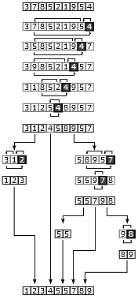
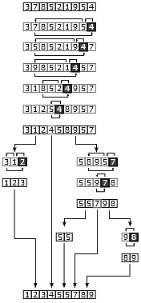

Technical Blog #7
From my small background in computer science, I've had some experience with sorts and their efficiency. I always like reading about the algorithms because they're all different ways of solving the same problem - how do I sort this list of data? I'll be talking about the merge, quick, and bubble sort in this blog post using resources from Wikipedia.
The nice thing about some of these sorts is that the name is very descriptive about how the algorithms work. In the case of the merge sort, it breaks down a list into the smallest possible sublist. Imagine you have a list of 8 numbers. First the list will be broken into 2 sets of 4 numbers, then 4 sets of 2 numbers, then 8 sets of 1 number. Then it repeatedly merges these sublists while the sorting them, and the end result will be a sorted list. I love looking at visualizations of how sorts work because they help you understand them better, so here's a couple for merge:


Quicksort is a bit harder to explain because "quick" doesn't tell you anything about how the algorithm works, but rather the speed at which it works. First, an element called the pivot is picked from the list. You can read more about how to choose the pivot on Wikipedia if you're curious. Then every element in the list is compared to the pivot. If it's less than the value, move it to the left of the pivot. If it's greater, move it to the right. It doesn't matter which direction for equal values, but at the end of the reordering, the pivot's position in the list is already set. Then the sort is called again for both the left and right sublists. This is an example of recursion, where the base case is when the size of the sublist is 0 or 1, which is when the sort stops. Again, here are some visualizations:
 

Finally, we have bubble sort, which again has a name representative of the algorithm. It iterates through a list and swaps adjacent elements if they are in the wrong order. Once it gets to the end, it starts at the beginning of the list and does the process again until there's a pass where no swaps occur. The sort gets its name from the way the elements "bubble" through the list. Look at the visualizations and see if you agree!


Each algorithm has strengths and weaknesses depending on the size and type of data being sorted, but you only need to worry about that if you can't use your language's built-in sorting functions. If you understand Big O notation, then you can look at this table to see how the sorts compare to each other!